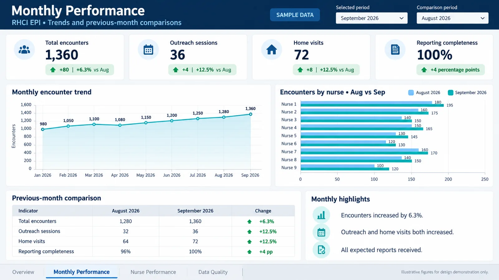

Power BI
Starting a Power BI dashboard: five measures that matter
Start a Power BI report the right way: a clean data model, five trusted measures and a simple page layout, with the DAX to copy.

Published Updated 2 min read
In short
- Build the data model before any charts: one fact table and small lookup tables.
- Create five measures first: total, target, coverage, change from last month and facilities reporting.
- Check three facilities by hand against the source before you share anything.
Many dashboards start with charts. Good ones start with a clear data model and a few measures everyone trusts. Once those are right, the charts almost build themselves.
Build the model first
Use one table for the facts, such as one row per facility per month, and small lookup tables for facilities, dates and indicators. Connect each lookup table to the fact table with a simple one-to-many relationship. This shape is often called a star schema.
Five measures to create first
Write these as measures, not calculated columns, so they respond to every filter on the page.
| Measure | What it answers | Example DAX |
|---|---|---|
| Total doses | How many? | Total Doses = SUM(Facts[Doses]) |
| Target | How many should there be? | Target = SUM(Targets[Target]) |
| Coverage | Are we on track? | Coverage = DIVIDE([Total Doses], [Target]) |
| Change from last month | Up or down? | Change = [Total Doses] - CALCULATE([Total Doses], DATEADD(Dates[Date], -1, MONTH)) |
| Facilities reporting | Is the data complete? | Reporting = DISTINCTCOUNT(Facts[FacilityID]) |
DIVIDE is used for coverage because it returns a blank instead of an error when the target is zero.
Keep the page simple
- Headline cards at the top: total, coverage and facilities reporting
- One trend chart: coverage by month with the target as a line
- One comparison: coverage by facility, sorted lowest first
- A table underneath with the same numbers
- Filters for month and facility in the same place on every page

Test before you share
Pick three facilities and calculate their numbers by hand from the source file. If all three match the report, you can trust the logic. If one does not, you have found a relationship or filter problem before your audience did.
Write the definitions down
Every measure should have a one-line definition that a manager can read. Keep them on a hidden page or in the indicator reference sheet, so the next person to maintain the report knows exactly what each number means.
You can see this layout on the sample dashboard on this site, and use the checklist below before you share your own.
Free tools for this note

Written by
Alhaji Ibrahim MehemohData Officer and M&E specialist in Bo, Sierra Leone. I build Survey123 forms, Power BI dashboards and simple data systems for health programmes, and provide IT support for small organisations.